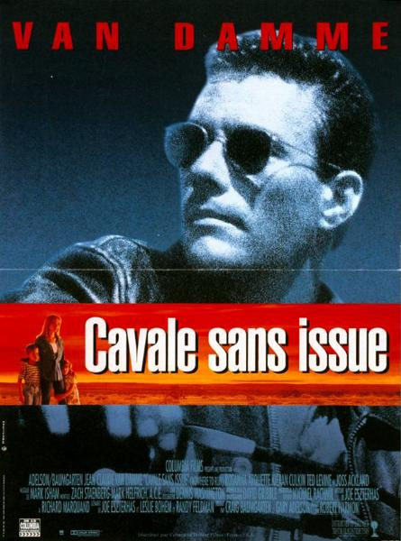
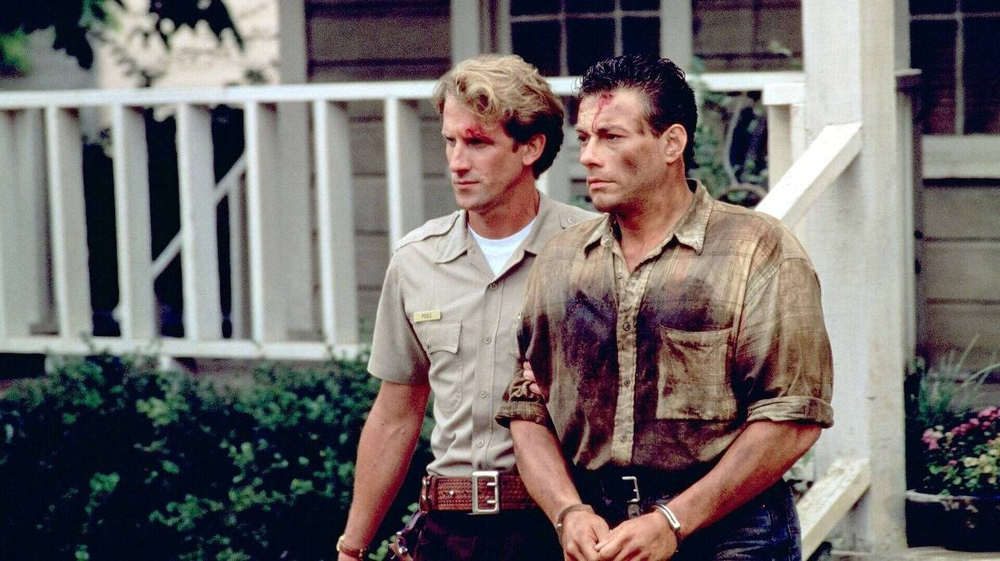
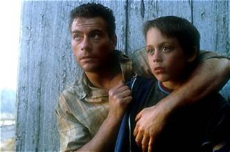

Celui-là, je l'ai regardé à 13 ans, et il n'était pas seul dans l'histoire.
Quelques temps avant, chez des amis de mes parents, j'étais tombé sur Chasse à l'homme — Hard Target. Van Damme dans le rôle d'un chasseur de primes, en pleine Nouvelle-Orléans. Je n'avais jamais rien vu de tel, et j'étais reparti avec une seule idée en tête : en voir plus.
Il se trouve que mon grand-père avait, sans le savoir, la réponse toute prête dans son armoire — une cassette enregistrée, Cavale sans issue (Nowhere to Run), avec le même Van Damme.
Je l'ai glissée dans le lecteur avec l'excitation de celui qui pense retrouver la même sensation.
Ce soir, retour à ces 13 ans-là.

Cavale sans issue — affiche, 1993
Cavale sans issue (Nowhere to Run).
1993. Réalisé par Robert Harmon. Avec Jean-Claude Van Damme, Rosanna Arquette et Kieran Culkin.
Produit par Columbia Pictures, sur un scénario coécrit par Joe Eszterhas — l'un des scénaristes les mieux payés d'Hollywood à cette époque — et Leslie Bohem. Un western contemporain davantage centré sur les personnages que sur l'action pure, ce qui en fait une proposition atypique dans la filmographie de son acteur principal.
Van Damme y incarne Sam Gillen, un évadé de prison qui trouve refuge dans une ferme isolée tenue par une veuve et ses deux enfants, menacés par un promoteur immobilier sans scrupules.
Face à lui, Rosanna Arquette compose cette mère seule, et un très jeune Kieran Culkin — quelques années avant Maman, j'ai raté l'avion 2 — apparaît dans l'un de ses tout premiers rôles.
Cavale sans issue ralentit volontairement le rythme pour laisser respirer ses personnages.
Un choix rare pour du Van Damme.
1993.
Jean-Claude Van Damme, au sommet de sa popularité après Universal Soldier et juste avant Hard Target, cherche à diversifier son image au-delà du pur film d'arts martiaux. Cavale sans issue s'inscrit dans cette volonté — un projet porté par un scénario de prestige, signé Joe Eszterhas, alors l'un des scénaristes les plus recherchés et les mieux rémunérés d'Hollywood après Basic Instinct.
Le script, coécrit avec Leslie Bohem, s'inspire ouvertement de Shane, le classique western de 1953 — l'étranger solitaire qui protège une famille menacée par des intérêts fonciers puissants. Robert Harmon, réalisateur du très remarqué The Hitcher en 1986, apporte une sensibilité visuelle soignée, plus proche du drame western contemporain que du film d'action pur.
Van Damme retrouve ici Craig Baumgarten, producteur avec qui il venait de collaborer sur Universal Soldier — une deuxième association qui témoigne d'une confiance mutuelle installée.
Face à lui, Rosanna Arquette, actrice reconnue depuis Desperately Seeking Susan, apporte une légitimité dramatique au projet, tandis que le jeune Kieran Culkin, frère de Macaulay Culkin alors au sommet de sa gloire avec Maman, j'ai raté l'avion, fait l'une de ses toutes premières apparitions à l'écran.
Le tournage se déroule dans des décors ruraux évoquant l'Amérique profonde, loin des habituels environnements urbains du cinéma d'action de Van Damme à cette époque.
Sorti en janvier 1993, quelques mois avant Hard Target qui allait définitivement ancrer Van Damme dans l'action pure, Cavale sans issue reste une tentative singulière de l'installer ailleurs.

Sam Gillen, arrêté — le dernier plan
Sam Gillen, condamné à tort et évadé de prison, cherche à récupérer l'argent d'un ancien coup planqué dans une ferme isolée.
Il trouve refuge auprès de Clydie Anderson, veuve élevant seule ses deux enfants, Mookie et Bree, sur leurs terres. Sam s'installe temporairement chez eux, dans un premier temps par nécessité plutôt que par choix.
La ferme des Anderson est convoitée par Franklin Hale, un promoteur immobilier sans scrupules qui cherche à racheter toutes les terres de la région pour un projet de développement. Face au refus de Clydie de vendre, les méthodes d'intimidation de Hale et de ses hommes de main se font de plus en plus violentes.
Sam, d'abord simple témoin de cette situation, se retrouve progressivement impliqué dans le conflit — tiraillé entre son besoin de rester discret pour échapper à la justice, et son attachement grandissant pour cette famille qui l'a accueilli sans poser de questions.
L'étranger de passage devient malgré lui le seul rempart entre les Anderson et ceux qui veulent tout leur prendre.
Cavale sans issue emprunte ouvertement la structure du western classique — l'étranger errant qui s'arrête, protège, puis repart — mais la transpose dans une Amérique contemporaine sans jamais renier ses origines.
Le film prend son temps, ce qui constitue à la fois sa singularité et son risque le plus assumé. Robert Harmon privilégie les silences, les regards, la construction progressive d'une confiance entre Sam et la famille Anderson, plutôt que d'enchaîner les scènes d'action. Cette approche rappelle directement Shane, dont l'influence irrigue chaque scène — l'homme de l'ombre qui trouve une forme de rédemption au contact d'une famille qui n'attend rien de lui.
Van Damme livre ici une performance plus retenue que d'habitude. Sam Gillen parle peu, agit encore moins par réflexe, et le film mise sur sa présence physique silencieuse plutôt que sur des dialogues qui auraient pu sonner artificiels dans sa bouche. C'est un pari qui fonctionne différemment selon les scènes — parfois touchant dans sa sobriété, parfois limité par les contraintes évidentes de l'acteur dans un registre aussi dramatique.
Rosanna Arquette apporte une vraie profondeur émotionnelle à Clydie, ancrant le film dans une réalité sociale — la précarité économique, la vulnérabilité face aux puissants — qui dépasse largement le simple prétexte à l'action.
Le versant action, quand il arrive, reste maîtrisé et fonctionnel sans jamais devenir le centre de gravité du récit — un choix qui distingue clairement Cavale sans issue du reste de la filmographie de son acteur principal à cette période.
Un Van Damme qui essaie sincèrement autre chose, avec des résultats inégaux mais une intention qui mérite d'être reconnue.

Sam et Mookie, à la ferme des Anderson
Cavale sans issue souffre d'abord d'un problème de timing dans la carrière de son acteur principal.
Sorti en janvier 1993, le film précède de quelques mois seulement Hard Target, qui va définitivement ancrer l'image de Van Damme dans l'action pure et spectaculaire. Le public qui découvre ou redécouvre l'acteur à travers ce diptyque garde presque exclusivement en mémoire le second, plus conforme à ce qu'on attend de lui — reléguant Cavale sans issue au rang de curiosité oubliée entre deux films plus marquants.
Le choix éditorial du film lui-même joue également contre sa postérité. En ralentissant délibérément le rythme, en misant sur le drame plutôt que sur l'action, Cavale sans issue déçoit une partie du public venu chercher le Van Damme habituel — sans pour autant convaincre pleinement la critique traditionnelle, qui reste sceptique face à un acteur associé aux arts martiaux dans un registre aussi dramatique.
Le film se retrouve ainsi coincé entre deux publics, sans jamais vraiment trouver le sien.
S'ajoute à cela la comparaison implicite mais inévitable avec Shane, dont l'ombre plane sur tout le récit — une référence trop écrasante pour qu'une variante d'action des années 90 puisse rivaliser dans la mémoire collective.
Un film sincère, pris entre deux feux.
Et progressivement oublié pour cette raison précise.
Parce que c'est l'une des rares tentatives sincères de Van Damme d'explorer un registre purement dramatique, dans une période où sa carrière aurait facilement pu se contenter de la formule qui fonctionnait déjà.
Parce que Robert Harmon, avec son sens du rythme hérité de The Hitcher, construit une tension différente de celle qu'on associe habituellement aux films d'action de cette décennie — plus contemplative, plus attentive aux silences qu'aux explosions.
Et parce que voir Kieran Culkin à l'aube de sa carrière, dans un tout premier rôle, ajoute une note particulière pour quiconque connaît sa filmographie ultérieure.
Cavale sans issue reste ce Van Damme différent, celui qu'on oublie facilement entre deux films plus spectaculaires — mais qui mérite d'être regardé pour ce qu'il essaie sincèrement de faire, plutôt que jugé pour ce qu'il n'est pas.
Il y a ce dernier plan, Sam assis à l'arrière d'une voiture de police, arrêté après tout ce qu'il vient de faire pour cette famille. Il regarde par la vitre Clydie et les enfants qui le regardent partir — pas de fuite, pas de rédemption facile. Juste la loi qui reprend ses droits, et cette famille qui l'aime malgré tout ce qu'il est.
On devine qu'il reviendra, un jour, sa peine purgée. Le film ne le dit jamais. Il laisse juste ce regard suffire.
À 13 ans, j'avais espéré retrouver Hard Target dans cette cassette. J'ai trouvé autre chose — plus lent, plus silencieux, presque à contre-courant de ce que je venais de découvrir chez Van Damme quelques semaines plus tôt.
Il m'a fallu des années pour comprendre que c'était précisément ça, l'intérêt du film.
La cassette est dans le lecteur. On rembobine.
Titre original
Nowhere to Run
Pays
États-Unis
Genre
Western contemporain / Drame
Durée
94 min
Producteur
Columbia Pictures
Avec aussi
Rosanna Arquette · Kieran Culkin
Fil conducteur
Jean-Claude Van Damme (hors trilogie Saison 3)
Note
Scénario coécrit par Joe Eszterhas, inspiré de Shane (1953)
Regarder l'épisode
SOMEDAY — S2 EP. 10